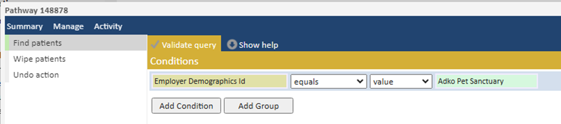
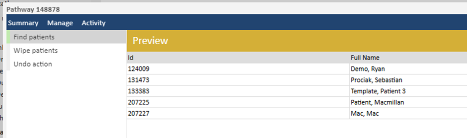
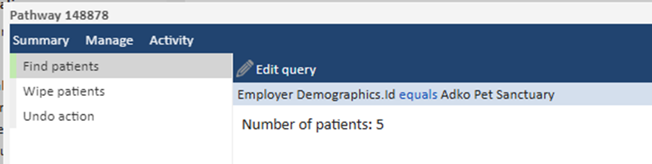
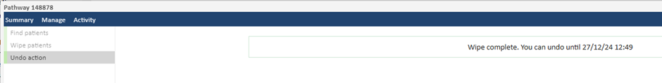
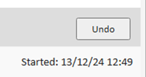

Pathways in Meddbase can be used to bulk-wipe a list of patients from your chamber.
For details on patient statuses, please see: Deleting Restoring and Wiping a Patient
For information about Pathways, please see: Understanding Pathways
Please contact support to set up this Pathway in your chamber.
This article will break down the steps to set up the Patient Wiping Pathway. This is broken down into steps with a variety of screenshots to guide you as you go through each step.
Patient/employee data deleted from MMS systems on request or at the end of the contract is wiped from live systems using a two-stage, non-reversible process which involves anonymisation and an overwrite at the cell level.
For multi-tenant environments, the data will persist in backups for up to 12 months prior to being overwritten, which is necessary to safeguard the integrity of clinical records.
Step 1: Start the pathway by clicking Start > New Pathway on the Start Page.
Step 2: Create a query to find the list of patients to wipe. For example, if you want to wipe all patients for a particular employer:

This task uses the report builder but there is limited support for aliases. It’s recommended to use columns that have a 1 to 1 relationship, however it is possible to use columns on a 1 to many relationship.
Step 3: On the next screen you will see a preview of the query results.

Step 4: If you’re happy with the results, click ‘Next’ again, otherwise you can click ‘Back’ and edit the query.
Step 5: On the next page you will see the total number of patient records that will be wiped.

Step 6: Click ‘Proceed’.
Step 7: On the next page you be presented with the list one final time. Confirm the list is correct and then click ‘Wipe Patients’.
Step 8: All patient records in the list will now be wiped and they will no longer appear in any patient searches.
Step 9: The final task in the pathway will allow you to undo the wiping action if you discover an error. The grace period is 2 weeks, after which the action is irreversible.

To reverse the action, simply click ‘Undo’ within 2 weeks.

Below is an example walk through of wiping patients that have not had an appointment within the previous 7 years.